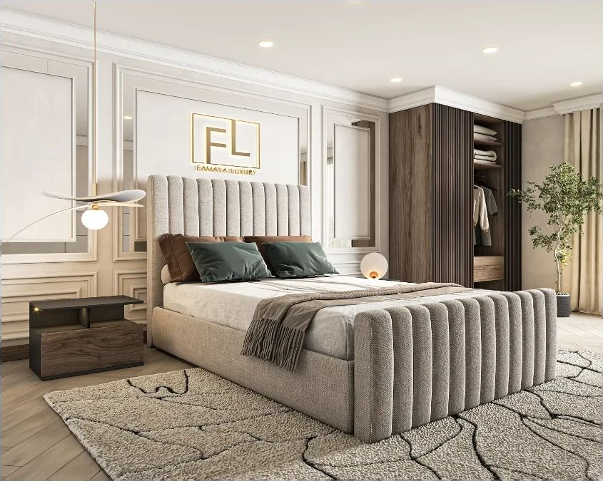
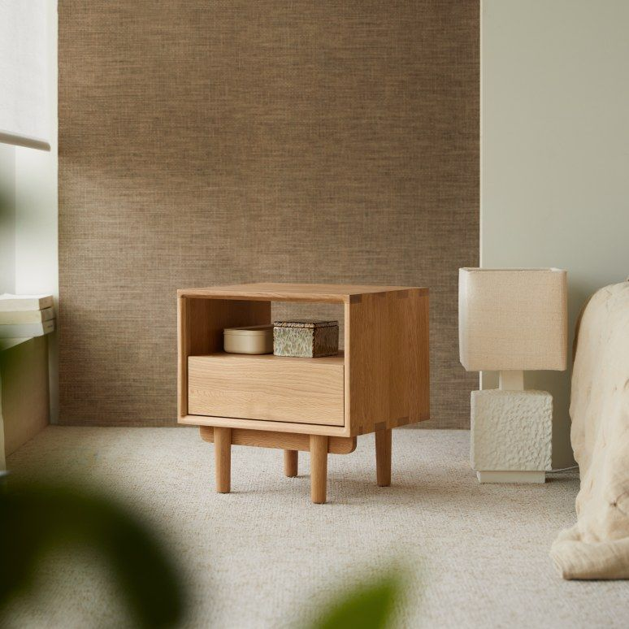
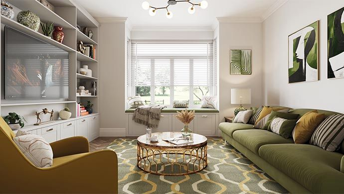
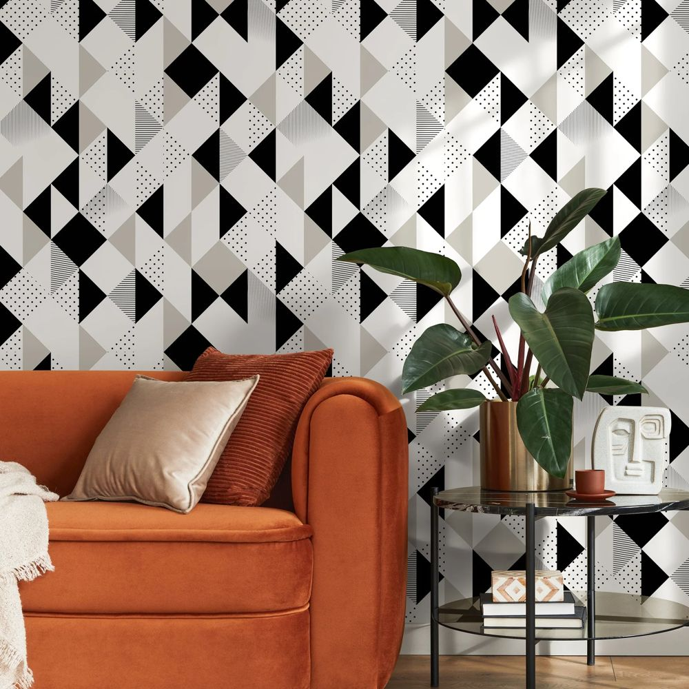
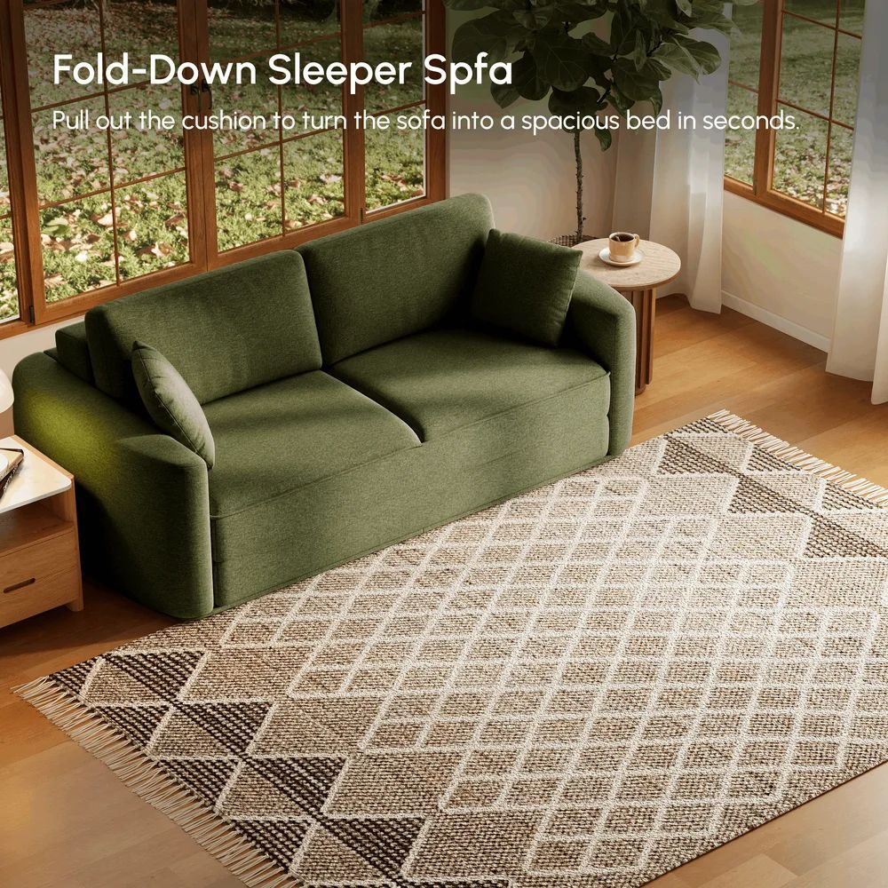
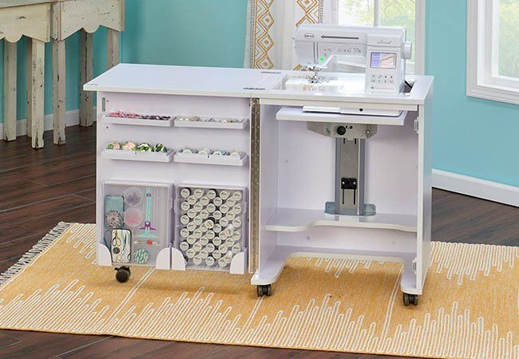

Mi piace che la casa sia comoda e accogliente. Mi piace lo stile moderno, ma non troppo sterile o scomodo: se devo scegliere, scelgo la comodità allo stile.
Voglio che chi viene da noi si senta a suo agio, non in un museo dove non si può toccare niente. Del colore mi importa poco: mi va bene quello che sta bene insieme, e se un pezzo non si abbina alla perfezione non è un problema.
Consulente in compliance. Lavoro da casa, ma mi basta una scrivania abbastanza grande per un monitor in più: l'aspetto dell'ufficio lo decide Alex, io lo userò ogni tanto.
A seconda di cosa devo fare lavoro anche in soggiorno con il portatile, o a volte in un caffè. Non mi serve uno spazio dedicato.
Cucito: ho un piccolo secrétaire che uso per cucire e che si chiude con dentro tutto l'occorrente; accanto ci va un tavolino per la macchina da cucire, e stoffe e cartamodelli stanno nell'armadio. Mi piacerebbe tenere tutto nella camera degli ospiti.
Mi piacciono i puzzle, da fare in soggiorno mentre guardo la TV, quindi un tavolo da puzzle sarebbe l'ideale: questo mi piace. Adoro anche cucinare e preparare dolci, e userò il tavolo che c'è in cucina come piano di lavoro in più.
Un letto grande, perché dormiamo con i cani e occupano molto spazio, e morbido e caldo, con abbastanza spazio per i vestiti così che non ci sia troppo disordine. Vorrei però una sedia o qualcosa dove buttare i vestiti la sera, che al mattino metto a posto. Non ho mai avuto abbastanza spazio armadio: non ho molti vestiti, ma ho sempre avuto poco spazio, quindi sarebbe bello avere una cabina armadio dove vedere tutto.
Per la camera degli ospiti vorrei un divano letto davvero comodo, senza molle e sbarre, matrimoniale per una coppia; probabilmente aggiungerò un coprimaterasso in schiuma, perché i materassi dei divani letto sono sempre troppo sottili. In cucina faremo soprattutto colazione e caffè; i pasti si faranno per lo più in sala da pranzo o davanti alla TV.
Stanze
Clicca su una stanza per aprire la sua pagina. Cucina e camera degli ospiti non hanno ancora immagini, ma ci sono già le cose che servono.



Camera da letto - Jemilah
Un letto grande, morbido e caldo, con tanto spazio per i vestiti.
Apri Camera da letto - Jemilah →


Soggiorno - Jemilah
Moderno ma comodo, con un tavolo da puzzle per le serate davanti alla TV.
Apri Soggiorno - Jemilah →Cucina - Jemilah
Per cucinare e fare dolci, e per la colazione.
Apri Cucina - Jemilah →


Camera degli ospiti - Jemilah
Un divano letto davvero comodo per due, e il mio angolo cucito.
Apri Camera degli ospiti - Jemilah →